01 — Front page / CapyCity edition
Stay mellow.
Go onchain.
An animation-first character universe, a shared city, and a crew building better internet rituals — ten thousand capybaras deep.
02 — Dispatches
Broadcasts from
the district.
Animated clips, city transmissions, and collectible moments move through CapyCity all day. The running order is below; pick any entry.
03 — The cast
Different fits.
Same frequency.
Every capybara is one character actor in one wardrobe system: garments, headwear, accessories, and palette change — the face never does.3
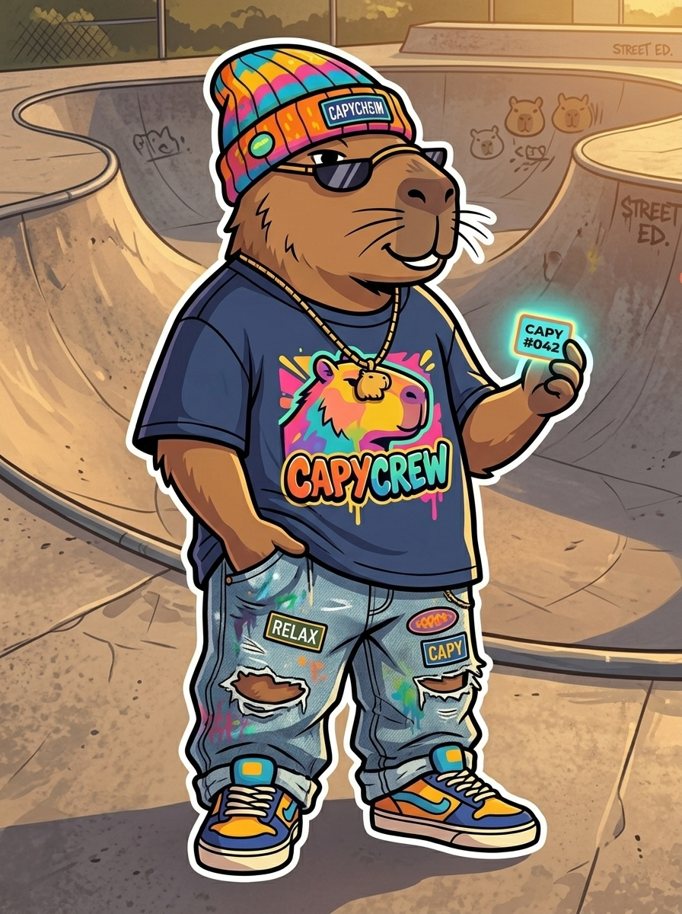
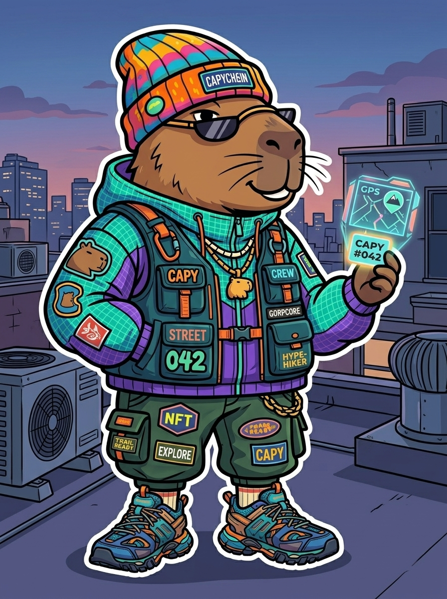
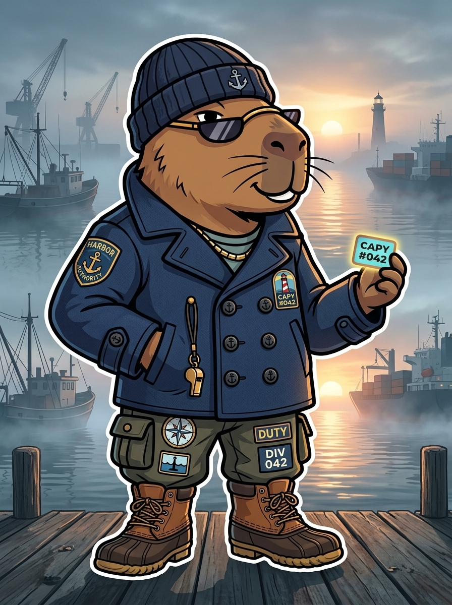
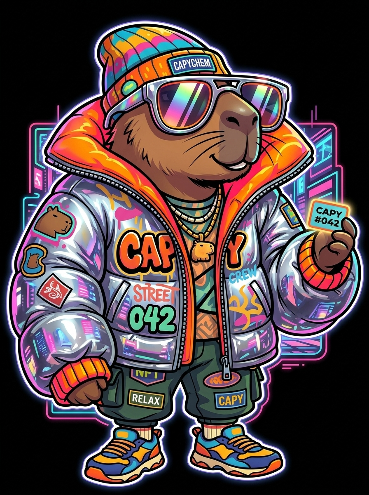
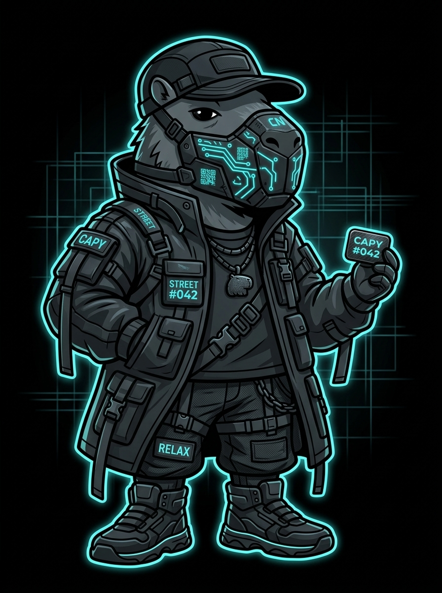
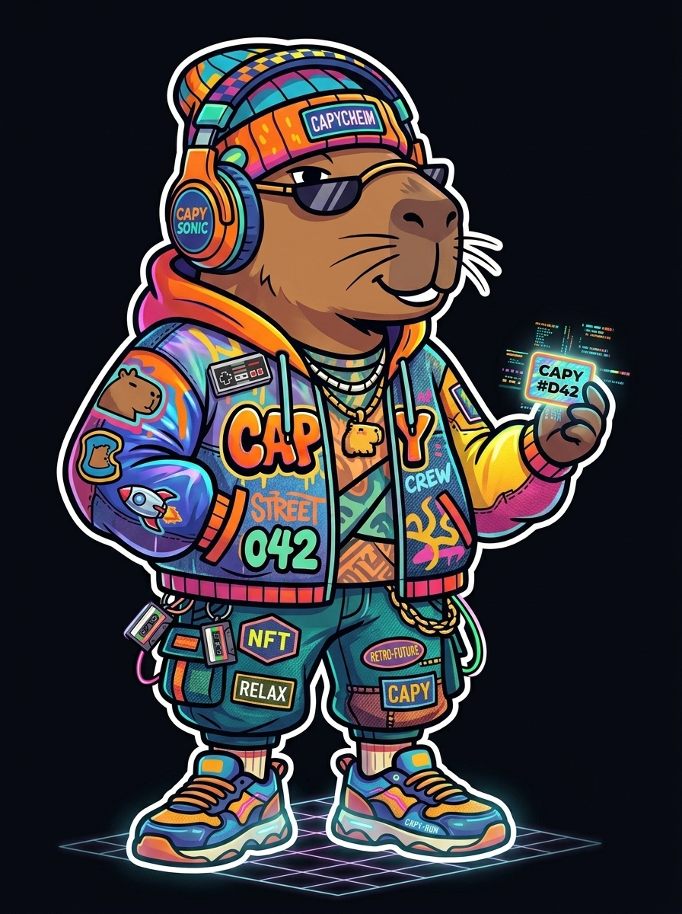
04 — Notes
A creative
internet club.
CapyCrew is a 10,000-piece collectible character project on the Robinhood Chain. Each Capy is a digital identity and a membership pass into CapyCity — an evolving universe shaped by character art, fashion, animation, games, and community culture.
The product is the experience around the collectible: a profile, a holder gallery, monthly missions, community polls, a public activity feed, and a growing library of districts, drops, badges, and events.
What is being built
- Wallet + Capy profile. Connect, verify a Capy, manage traits, animations, badges, and history.
- Holder gallery. Inspect characters with trait metadata and animation previews.
- Monthly missions. Design a district, submit an outfit, vote on a drop, attend an event.
- Rewards. Badges, artwork, early access, and discounts — each published when it is live.
- Public build log. Dated entries for districts, drops, and community decisions.
The direction
CapyCity grows in chapters: Street, Studio, Arcade, Harbor, and the places members invent next. Each district can carry its own characters, media, missions, collaborations, and event format.
The route is lit by deliverables, not hype. Earn each district before building the next one.
05 — Product study
The crew has
a home now.
Identity, missions, proofs, and community signal on one operating surface.
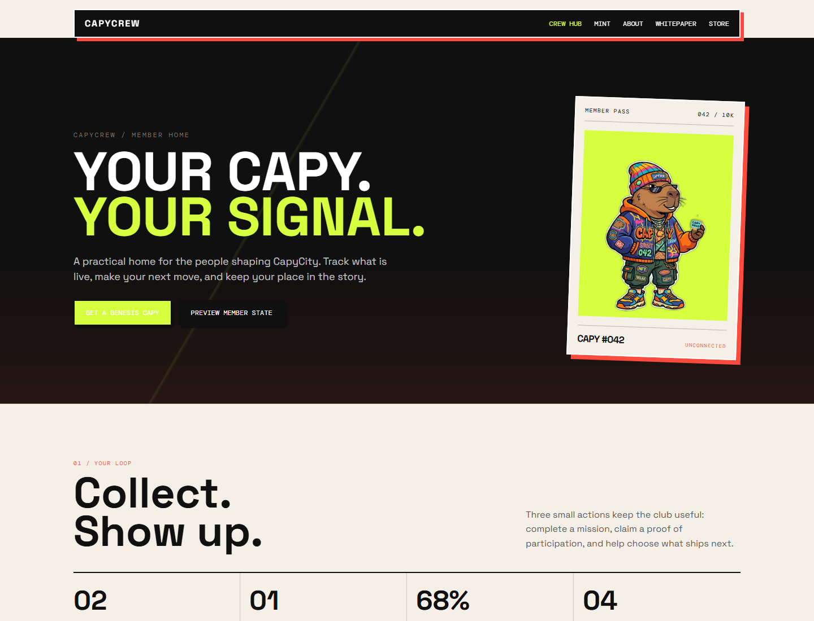
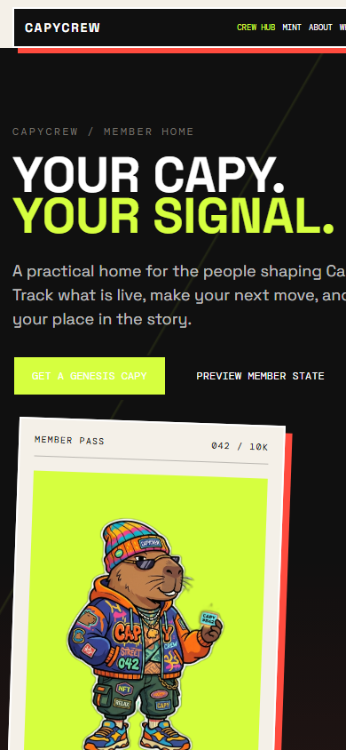
Annotations mark the two loops the hub has to carry: identity in, contribution out.
06 — Ledger
Utility before
supply.
Gated — not launched. $CAPY is not the primary product and is not required for the MVP. The table below models an illustrative fixed genesis supply for review. Treat every figure as a planning envelope rather than a committed number. No launch date is promised.
| Allocation | Share | Tokens | Condition |
|---|---|---|---|
| Ecosystem & missions | 40% | 400,000,000 | Milestone-based rewards. Includes the tier-weighted holder airdrop (100,000,000). |
| Treasury & grants | 25% | 250,000,000 | Multisig, published budgets, and reporting required. |
| Liquidity | 15% | 150,000,000 | Only if a launch is approved; venue and lockup disclosed first. |
| Contributors | 10% | 100,000,000 | Minimum cliff, staged vesting, wallets disclosed. |
| Reserve | 10% | 100,000,000 | Locked until a public proposal and review. |
| Total | 100% | 1,000,000,000 | Fixed genesis supply, no inflation.1 |
Design rule: if CapyCrew cannot explain what the token does for a real user, what demand it creates, and how value flows through the system, the token does not launch.
07 — Route
Keep moving
with intention.
Four chapters, published in order. Each one has to earn the next.5
- 01 Crew HubLive Missions, proofs, one community signal, and a clear member loop.
- 02 DistrictsNext CapyCity scenes, holder tools, and community-led drops.
- 03 WearablesPlanned Digital clothing, accessories, and media identity layers.
- 04 ExpansionExploring Physical goods, collaborations, events, interactive world modules.
08 — Goods
Wear the
signal.
Objects from CapyCity are in development. First product studies below.4
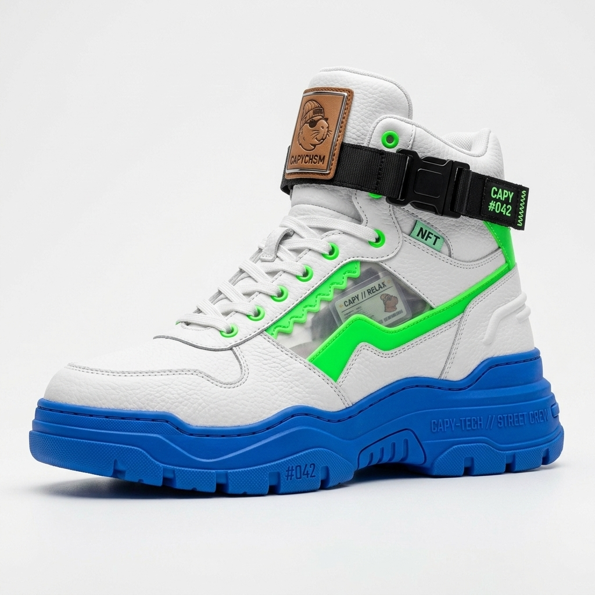
Soon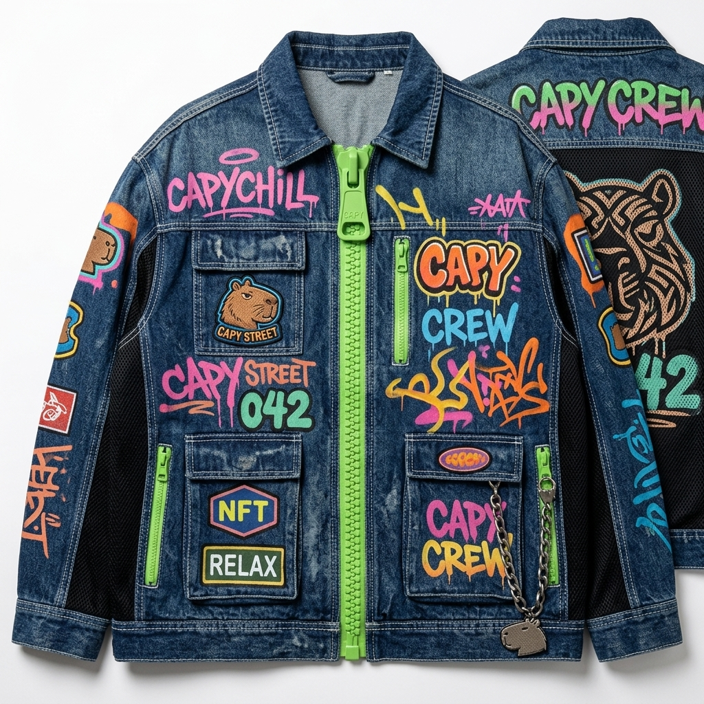
Soon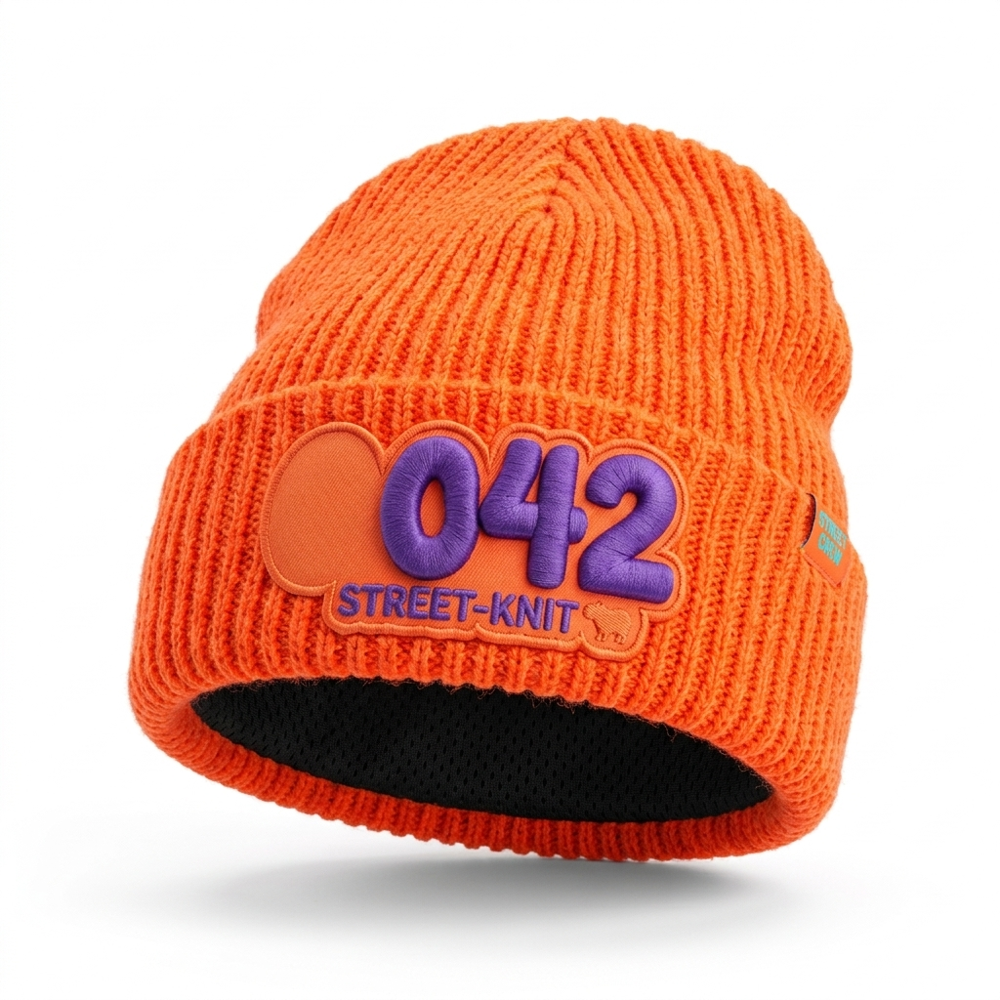
Soon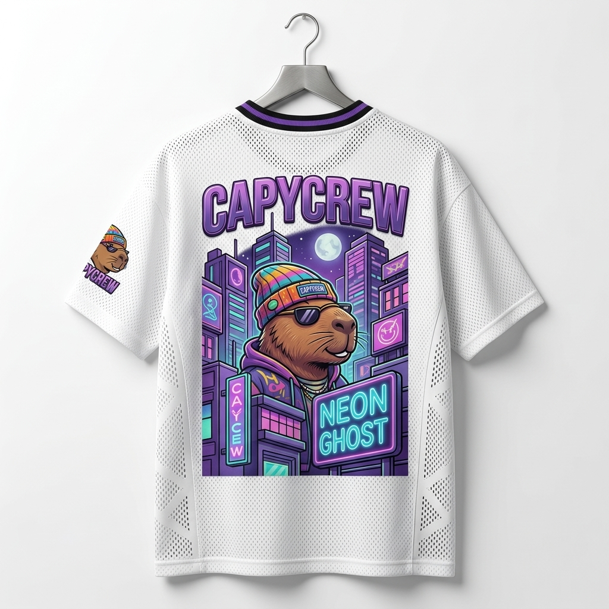
Soon